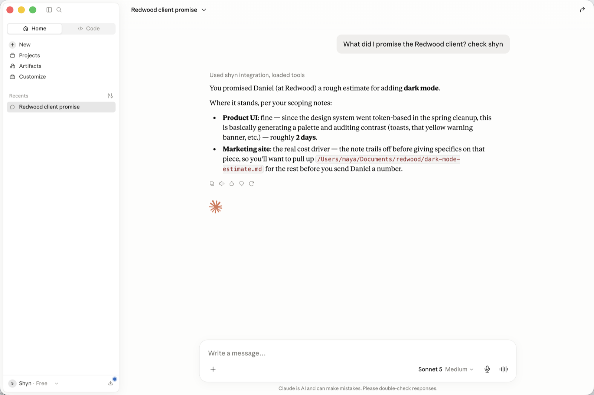
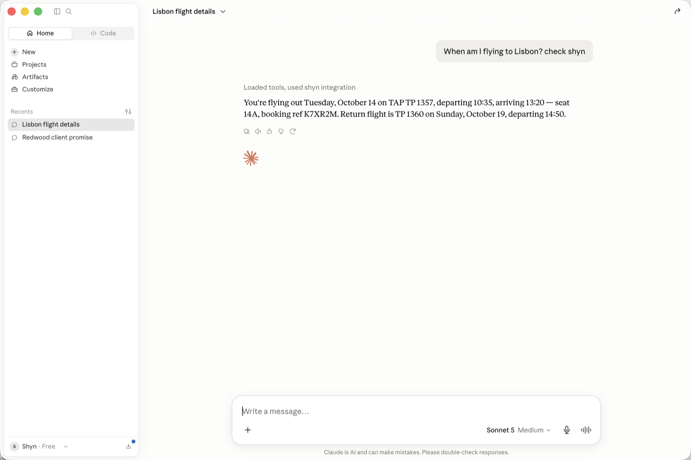
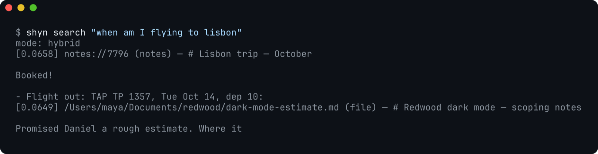

Product screenshots are the most staged artifact in software. Ours are staged too. This is the story of how we know our staging was convincing, because the only one who caught it was the product.
Here is the problem with screenshotting a memory tool: shyn's entire promise is that the register of your days belongs to you. Pointing a camera at a real person's memory to make marketing material would be a strange way to honor that. So we did what film sets do — we built a set. Maya Chen, freelance product designer, entirely fictional: a client call about a pricing page, a half-finished note scoping dark mode, a Lisbon trip in October, a CSS trick she keeps forgetting, a grocery list. Ten documents, staged into a scratch copy of shyn with timestamps arranged like a believable week.
Then, mid-setup, we asked Claude on that same Mac: “What did I promise the Redwood client? check shyn.” — and by mistake, the question went to the real shyn instance, the one that had been quietly keeping the register while we worked. Its answer, lightly compressed:
What I can see are terminal sessions, an MCP wrapper being set up, and a demo daemon serving fabricated data for someone named “Maya” — not a real business record. Rather than stitch something together from development debris, I'll say plainly: I don't have an actual answer to what you promised the Redwood client.
The product had watched us build its own fake demo, and declined to be fooled by it. We would have been annoyed if we weren't so pleased. It is the most honest QA report we have ever received, and nobody wrote it.
What you're actually looking at
shyn lives in your Mac's menu bar and keeps the register: pages you read, meetings you sit through, notes you scribble. Everything lands in an encrypted database on your own disk, indexed for search — keyword and semantic, both local. When your AI needs to know something about your life, it asks shyn over MCP and gets an answer grounded in what actually happened. Nothing phones home.
So when Maya asks about her work:

Or about her life:

The terminal-minded can skip the chat entirely:

shyn search — hybrid keyword + semantic ranking over a local socket, answers in milliseconds.The one screenshot that isn't staged

This one is live, from the instance that ratted us out. We can screenshot it because it was designed to be screenshotted: the popover shows counts, never content. Health of the capture agents, size of the index, pages read this week. There is nothing in it to leak. That is not an accident of this screenshot; it is a rule about what the surface of a memory tool should expose.
About those screenshots
Every conversation screenshot on this page shows Maya's fabricated memory, never a real person's. The staging is one command in our repo — a manifest of her ten documents, ingested with realistic sources and timestamps into a scratch instance with the history readers disabled. We are telling you this because a memory product that quietly used its makers' real memory for marketing would deserve exactly the skepticism it got from its own AI.
The fine print, as always
shyn is pre-alpha, macOS on Apple Silicon only. The apps are self-signed and re-signed locally by shyn setup; Apple-notarized installs are on the roadmap. Source-available under the Elastic License 2.0 — read it, build it, bring it to work; just don't sell it as a service. The code, including everything described here, is at github.com/shyn-labs/shyn.
$ brew install --cask shyn-labs/tap/shyn && shyn setupThe register keeps itself. Even, it turns out, when you'd rather it briefly didn't.